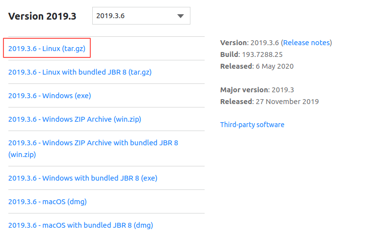
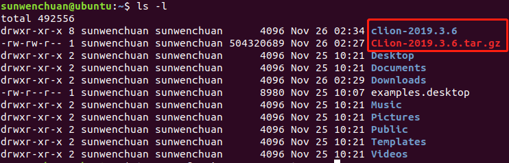
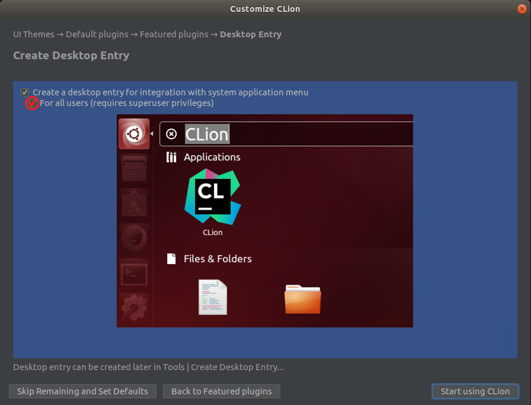
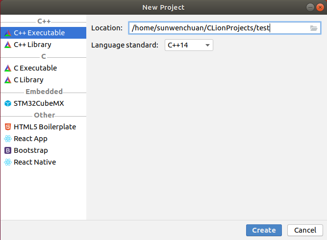
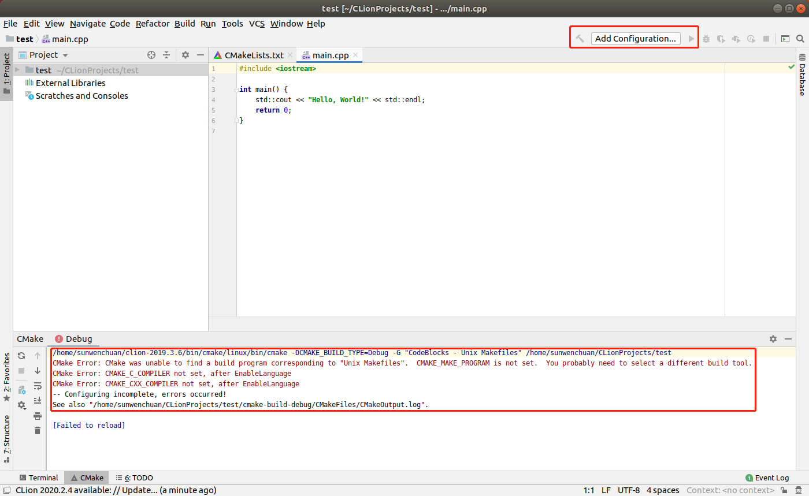
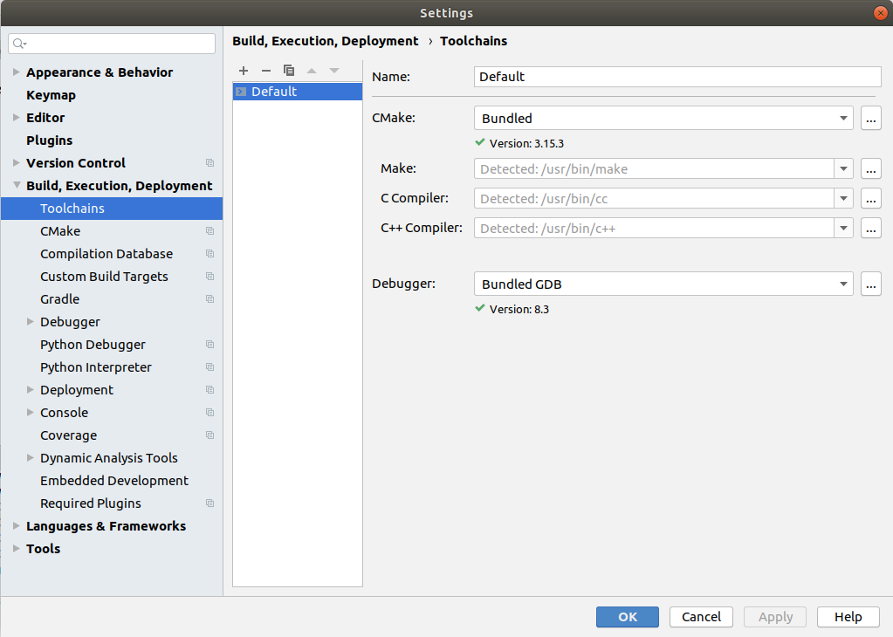
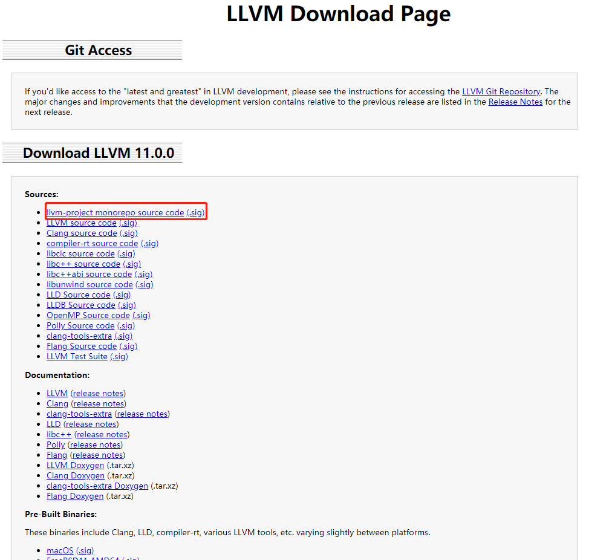
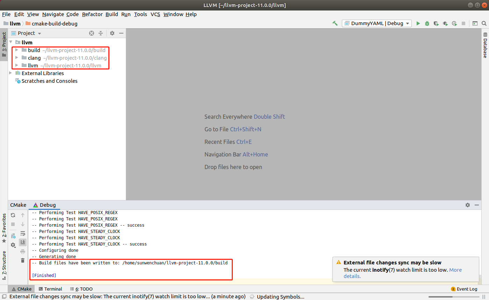
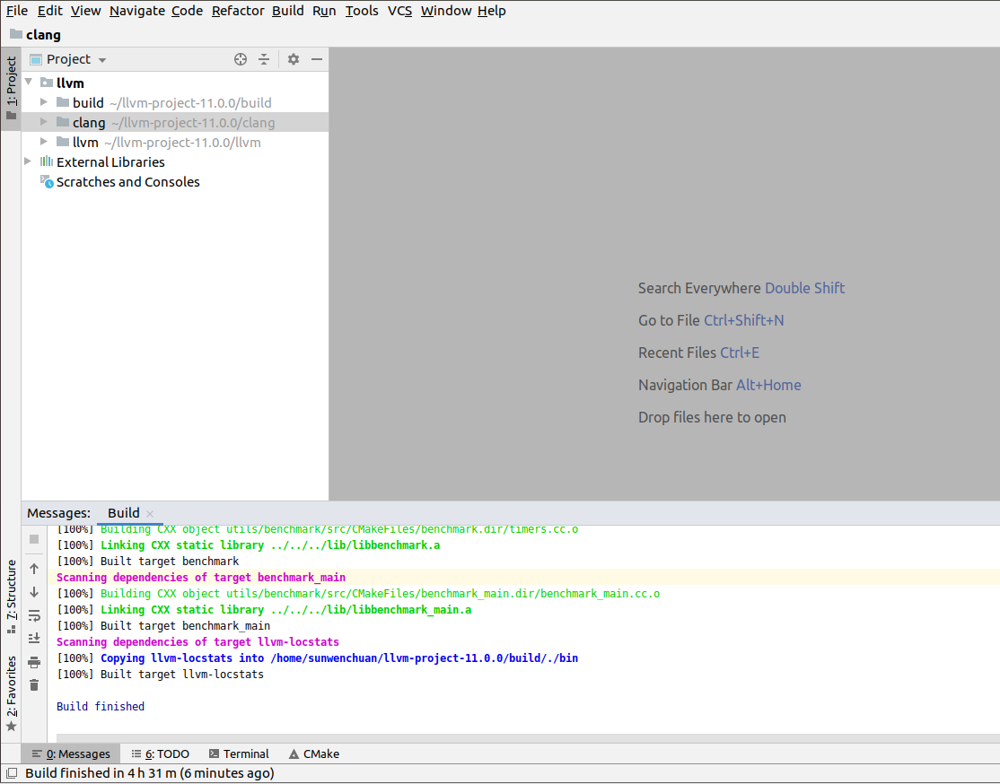
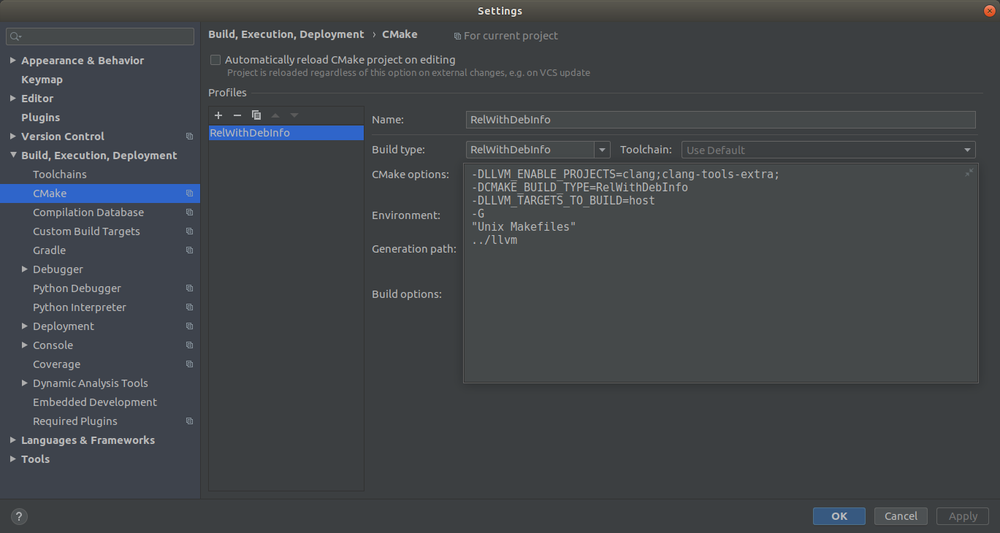

在 Ubuntu 中用 CLion 来管理 LLVM/Clang 工程
前言
LLVM 作为一个大型的编译套件，各种类继承关系，函数调用等十分繁杂，在 Ubuntu 下为了更好的，更方便的阅读 LLVM 套件的源码，希望通过 CLion 这个优秀的 ide 来管理这个工程。以下详细的记录了我在 Ubuntu18.04.1 中安装 CLion 和编译 LLVM/Clang 的步骤。对于初学者十分友好！！！
安装配置 CLion
换源
目前我的系统仍然是刚刚安装的 Ubuntu，先换上阿里源（以方便后续快速下载安装依赖包）
1 | 1.先用root权限打开sourses.list文件 |
下载安装 CLion
在 CLion官网 获取 CLion 的安装包，此处我安装的是 2019.3.6 版本：

通过 Ubuntu 中火狐浏览器下载的安装包应该在用户的 Download 目录中，我这里将其移动到用户目录中，并通过以下命令解压：
1 | tar -zxvf CLion-2019.3.6.tar.gz |
此时，用户目录会有以下两个文件：

在当前用户目录下输入以下命令即可展开 CLion 的安装：
1 | cd clion-2019.3.6/bin/ |
首先会弹出以下要你选择配置文件的窗口，选择 Do not import settings ，然后点击 OK 即可。
然后只需要一直 continue 即可，直到出现以下界面，在以下界面 For all users 处打上勾勾，点击 start，便完成了 CLion 的安装（CLion 是一个收费的 ide，但是可以先试用 30 天，自己可以想办法激活哦！）。

配置 C/C++ 编译环境
在安装好 CLion 后打开 CLion，如下图：
这里新建一个工程，点击 New Project，跳转如下：

这里就创建一个 C++ Executable，这在 CLion 里面会生成一个 CMake 工程，点击 creat，跳转如下：

可见在生成的工程里面 build （那个锤子按钮）和 run （播放按钮）都是灰色的，下面的 CMake 栏里面也有报 CMake Error，这是因为 CLion 的 C/C++ 编译 toolchains 还不完备（因为 Ubuntu 是默认不安装 C/C++ 编译套件的）。先关闭 CLion，打开命令行，输入如下命令安装 C/C++ 编译套件：
1 | 我们在ubuntu上编译程序，默认是有gcc的，但是没有g++。如果自己来安装g++也可以，不过它涉及到一些依赖库，有点麻烦。有个叫build-essential的包，里面包含了很多开发必要的软件包，很全，很方便。 |
这时候重新打开 CLion，会发现刚刚那个 test 工程可以 build 和 run 了（咦，我们好像没有安装 CMake，应该是 clion 里面已经集成 CMake）。我们可以通过点击 File->Settings->Build,Execution,Deployment->toolchain 看一下，可以看到 CLion 已经自动找到了刚刚安装的 gcc，g++ 和 make，如图：

到此，CLion 的构建环境搭建好了，接下来通过 CLion 来编译 LLVM/Clang。
编译 LLVM/Clang
获取 llvm-project
进入 LLVM 下载界面，我目前的稳定版本更新到 11.0.0，如下图：

可以看到在 Sources 下有很多下载链接，如果你只需要 LLVM 和 Clang 的话，可以只下载第二个（LLVM）和第三个（Clang）的源码，因为我后续要用到 clang-tools-extra 中的 clang-tidy 作静态分析，而且还有可能会用到其他更多的外部项目，所以这里下载第一个 llvm-project monorepo source code，里面包含其下所有的 LLVM 套件。
将下载好的文件放入用户目录，用以下命令对其解压：
1 | tar xvJf llvm-project-11.0.0.tar.xz |
得到 llvm-project-11.0.0 文件夹，进入其中，其目录树如下：
1 | . |
LLVM 编译环境配置
编译 LLVM 需要很多的依赖包，官网的要求如下：
我们这里输入以下命令依次安装：
1 | GCC套件和Make前面装clion的时候已经装好了 |
这样，依赖包就装好了！下面进入更重要的环节！也是我踩过最多坑的地方！！
编译 Debug 版的 LLVM 套件不仅需要很大的内存，而且编译得到的文件会消耗很多磁盘空间！！
所以首先保证你的虚拟机的磁盘空间最好在 100G 以上！
接下来就是内存了，我自己一开始仅仅开了 8G 内存，在链接 clang 的时候直接内存爆掉了。那么怎么处理内存的问题呢，首先，我将虚拟机的内存开到了 12G（物理机是 16G），然后挂载了一个 8G 的 swap 分区！根据经验，你的内存 + swap 分区大小最好 >16G ！！
根据以下命令，扩大 swap 分区大小：
1 | 1. 创建8G的空文件，以备挂载为swap分区（该过程可能需要半分钟） |
至此，编译环境都准备好了，接下来在 CLion 中编译 LLVM/Clang！！！
编译 LLVM/Clang
首先，在前文所说的 llvm-project-11.0.0 目录下创建 build 目录，作为构建的目录：
1 | cd ~/llvm-project-11.0.0/ |
然后打开 CLion，点击 Open File or Project ，然后选择 llvm 源码文件夹，点击 OK 打开，如下图：
这时候会进入 CLion，并且 CLion 会根据 llvm 文件夹下的 CMakeLists.txt 自动执行 CMake 构建出一个目录 cmake-build-debug ，如下图：
但这不是我们想要的，我们需要自己配置 CMake 的参数来进行生成。为此，进行接下来的操作：首先点击 Tools->CMake->Chang Project Root ，将其改为与 llvm 同级目录的 build 文件夹；然后点击 File->Settings->Build, Execution, Deployment->CMake 进入 CMake 的配置窗口；在 CMake 配置窗口内，将 Generate Path 改为刚刚那个 build 的文件夹，同时将 CMake options 里面的内容添加以下选项：
点击 OK，配置完成！
这时，CLion 又会自动执行 CMake 生成项目，生成目录如下（没有把 llvm 同级文件夹下其他不需要的文件夹包括进来）：

现在，你可以删除刚刚自动生成的 make-build-debug 的目录，并且进行 LLVM/Clang 的构建了！
开始编译：点击 Build->Build All in ‘Debug’，则开始正式编译项目了，编译生成的可执行文件均存放在 build/bin/ 目录下
历经 4.5h，终于编译成功了，这时候可以去进入 build/bin/ 目录下运行各种 LLVM 套件中的各种工具啦！！！

总结
编译 LLVM 的 Debug 版本需要特别大的内存，我在实践中还是编译的 RelWithDebInfo 版本，对于阅读源码调试源码暂时够用了。以下是我的 CMake 参数配置：

在用 CMake 生成构建文件时，有一些常用的 CMake 选项如下：
- CMAKE_BUILD_TYPE ：指定构建的类型，包括 Debug, Release, RelWithDebInfo 和 MinSizeRel 四种版本，默认是 Debug。
- CMAKE_INSTALL_PREFIX ：指定构建时的安装目录。
- LLVM_TARGETS_TO_BUILD ：指定构建的目标架构。包括：AArch64, AMDGPU, ARM, BPF, Hexagon, Mips, MSP430, NVPTX, PowerPC, Sparc, SystemZ, X86, XCore。默认全开，也可以用分号隔开来自己指定需要生成的架构。
- LLVM_ENABLE_PROJECTS ：一个分号分隔的列表，可以选择要额外构建的其他 LLVM 子项目。(只有在使用并排的项目布局时才有效，就是上文提到的那种目录树布局)。默认列表为空。可以包括:clang, clang-tools-extra, libcxx, libcxxabi, libunwind, lldb, compiler-rt, lld, polly, debuginfo-tests。